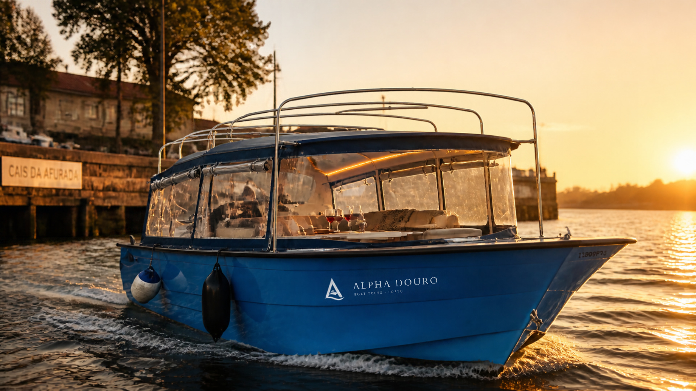

MARCO 01 · PARTIDA (← ESQUERDA: MAR | DIREITA: 7 PONTES →)Cais da Afurada (Ponto de Partida)
Todos os passeios começam no Cais da Afurada. Ao sair do cais, se virarmos à direita subimos o Rio Douro em direção às 7 pontes; se virarmos à esquerda vamos até à abertura do mar na Afurada.
EMBARQUE PRIVADO · ZERO FILAS TURÍSTICAS
CAIS DA AFURADA